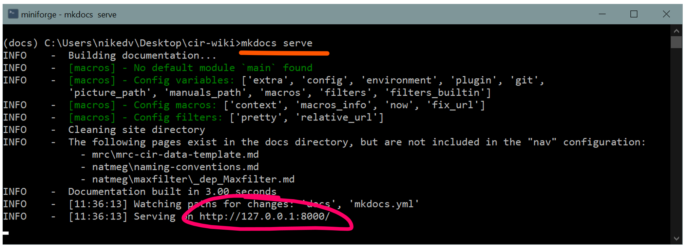
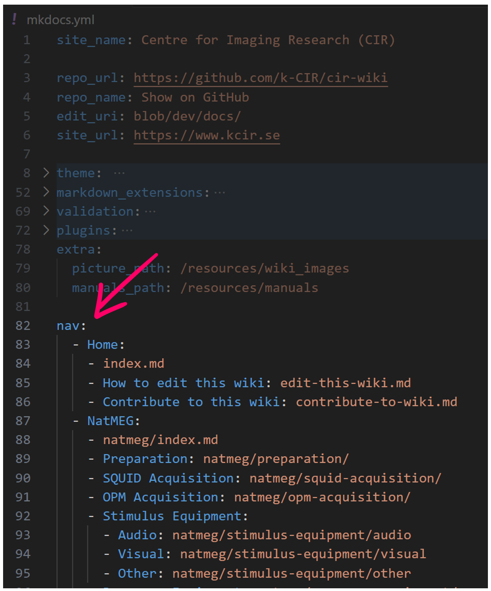
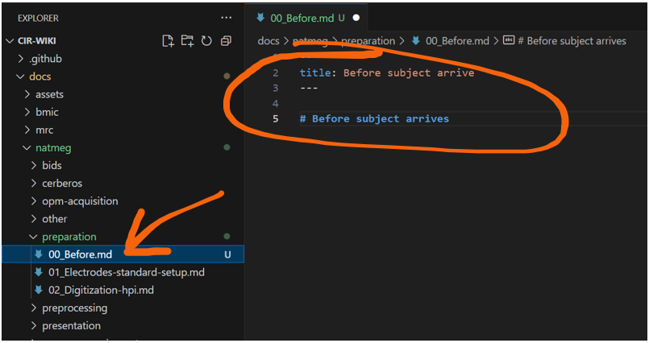
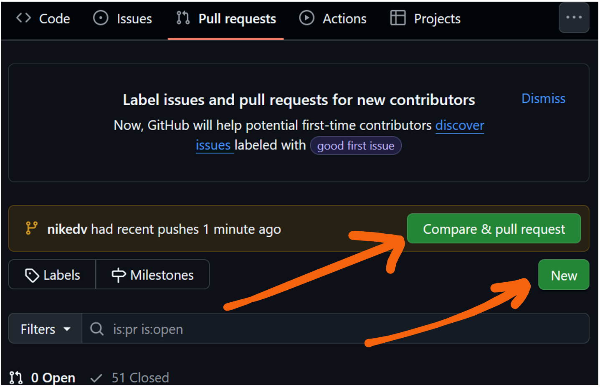
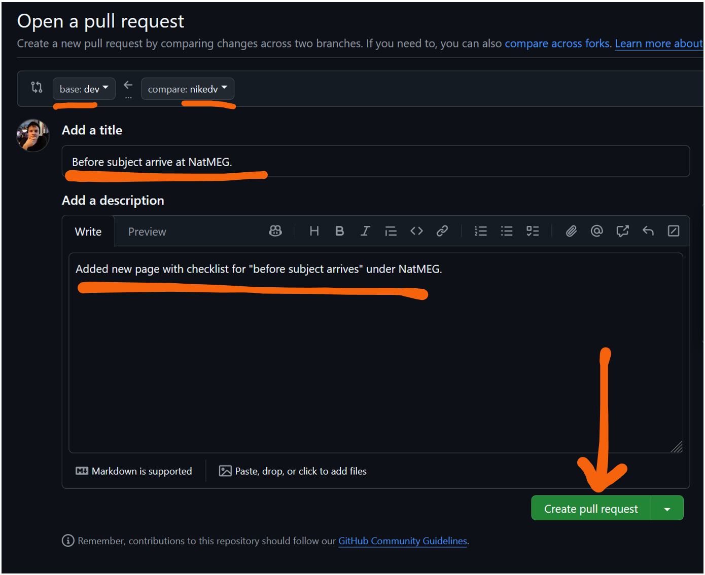

Contribute to this wiki
The simplest way to make substantial contributions to the wiki, like adding a section or page, is to clone the wiki to your local machine and make changes there. This way you can continously monitor how your changes will look once they are published, making sure the structure and pages looks like you expect them to.
This page will guide you through the process of cloning the wiki, running it locally, and making changes to it. If the technical side of things seem daunting or you run in to problems, you can post and issue on the Github repository to get support.
Clone the wiki
Step one is to clone the wiki to your local machine. To do this, go to its Github repository and clone the default dev branch.

Copy the SSH address of the repository from the repository page.
This assumes that you already set up an SSH key on your computer that is connected to your github account. Having an SSH key on your computer, paired with your github account is how github knows who you are and allows you to suggest tracked changes to the repository. If you have not set up an SSH key, you can follow the instructions here to do so. While this takes a few minutes to set up, it is a one-time task that is well worth the effort.
Then, use git clone <SSH adress> to clone the repository to your local machine. This will create a folder called cir-wiki in your current directory.
Install and run MkDocs
To run the wiki locally, you need to have MkDocs installed. If you have Python installed, you can install MkDocs using pip (package installer for Python). Running the command below will install MkDocs and companion packages used by this wiki.
pip install mkdocs mkdocs-material pymdown-extensions mkdocs-include-dir-to-nav mkdocs-macros-plugin
If you want to set up an new conda environment for this, you can do so with the following commands:
conda create -n mkdocs_env --channel=conda-forge mkdocs mkdocs-material pymdown-extensions mkdocs-macros-plugin
Then, activate the environment with:
conda activate mkdocs_env
The mkdocs-include-dir-to-nav package is not available in conda, you need to install it with pip after activating the environment by running:
pip install mkdocs-include-dir-to-nav
You are now ready to run the wiki locally. To do so, navigate to the cir-wiki folder and run: mkdocs serve

Running MkDocs in the terminal. Note the address where the wiki is running locally.
If you use your favourite browser to now go to the address shown in the terminal (usually http://127.0.0.1:8000/), you will see your local version of the wiki, running on your computer.
Before changing anything
Before making any changes, create your own git branch for the specific additions or modifications you plan to make. Use the command git branch branch_name to create a new branch, and then switch to it with git checkout branch_name. This keeps your work separate and organized, making it easier to track and review your changes before merging them.
Make your life easier
To make your life easier, use a purpose built text editor to work with the wiki. For example, using Visual Studio Code, you get syntax highlighting, source control integration (git) and can easily navigate between different documents. Open the cir-wiki folder in VS Code and you will see all the files and folders that make up the wiki. Of course, you can edit you markdown files in any text editor you choose.
The config file - mkdocs.yml
The wiki is configured using a file called mkdocs.yml in the root of the repository. This file contains the configuration for the wiki, such as the title, theme, and navigation structure. You should only have to concern yourself with the navigation structure, which is defined under the nav key in the config file. The navigation structure is a list of pages and sections that will be displayed in the sidebar of the wiki.

The navigation structure in the mkdocs.yml file. Found below specifiations for the theme and plugins.
Add an image
PNG-images can be included, try to keep resolutions below ~1000 pixels to save on space and load times. All pictures for the wiki are collected in cir-wiki/docs/resources/wiki_images/ save your image here and include it on your page by modifying the filename and caption, and pasting this code snippet to your page:
{ width="600" }
/// caption
Replace this text with the caption for your image.
///
Add a page
The pages of the wiki live as separate markdown documents in the repository under cir-wiki/docs/ which follows the general structure of the wikis web-page with each section of the wiki in a sub-folder. Adding a page to the wiki is as simple as navigating to the sub-folder corresponding to the section you want to add a page and creating a new markdown (.md) document. If you need some inspiration on how to write in markdown with headers, links, etc. you can get that from looking at the raw markdown of any other page in the wiki - like this one.
By default documents (or pages) are ordered alphabetically, if you want the pages in a specific order on the web-page, name your documents accordingly, i.e with a leading number to signify the order. Include a preample section that sepcify the documents title: and a descriptive first header # Following one hashtag to label the document/page and making it easy to find. Chapters (or sub-titles) on your page are created automatically for the sidebar based on the markdown-structure, i.e ## This is a chapter heading.

A new file name 00_Before.md has been added with a title and first header under docs/natmeg/preparation
Having added your page you can check that it renders as expected in your local version of the wiki (usually http://127.0.0.1:8000/) as described above under install and run MkDocs. Leaving mkdocs running, it updates your local version continously. This is a good way to preview your additions and changes as you make them.
When you are happy with your new page, commit and push them to your branch of the git repository. Then, create a pull request (PR) - a request to have your changes pulled in (or merged) to the main version of the repository - the branch named dev. There are a few different ways to do this, but most straight-forward is going to the pull request page. Recent commits are highlighted here with a shortcut, but you can always click New pull request and select your branch for comparison with base: dev.

Create a pull request for your changes. On top, highlighted in yellow you can see that the branch "nikedv" recently pushed some updates and you are invited to create a pull request for those. Below, you can always use the "New" button to create a pull request.
One of the hardest things in large collaborations is keeping track of who did what and why. To make it easy to understand and implement your suggested changes (i.e. merge your pull request), always give your PR a clear title and description of what you have added or changed.

The final stage for submitting a PR. You see on top that the request is to have branch named nikedv pulled in to the base branch named dev.
Add a section
TBA